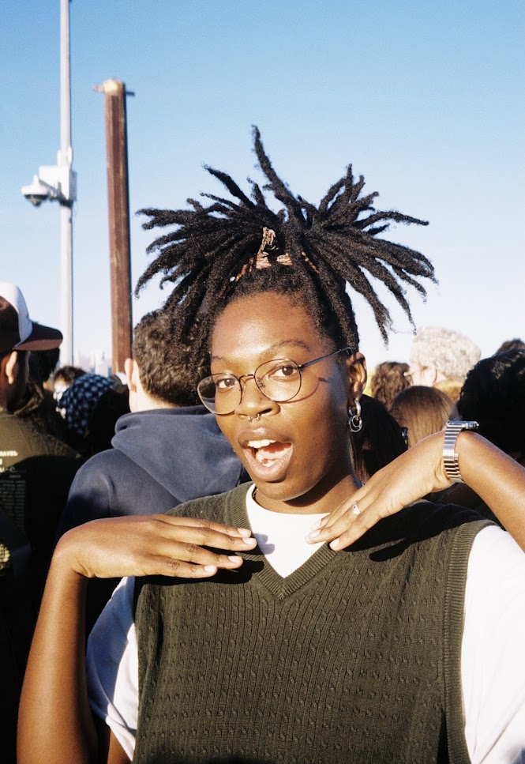

Irawo ‘Star’ Ajasin (they/them) is a designer, technologist, educator, and research-based artist from Atlanta, GA, based in Brooklyn, NY. Their work investigates the poetry and politics of digital infrastructure, seeking to design counter-imaginaries of the internet rooted in resilience. Experimenting across a range of media, including cyberethnography, web-based works, interactive installations, workshops, and print-making, Star aims to encourage collective inquiry around how technology as a socio-political object mediates our modern lives.
currently:
★ prepping for tabling at the NYABF with Sojourners for Justice Press
★ co-organizing some programming and an installation for a open studio session at the Lower Manhattan Cultural Council Arts Center at Governers Island on September 26th
★ working on a few freelance web/print design projects
email me! i'm always down for a convo
trace my curiosities on are.na
i don't post much on instagram but you can dm me there
